First Stop: Singapore!
Made it to Asia - time to enjoy Singapore
We finally landed after 16 hours at around 5AM Singapore time, arriving in the lovely Changi Airport.
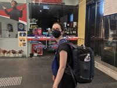We took the train to our hotel to finally begin our big trip, and to make sure we stayed awake to minimize jetlag, went straight to the rooftop pool!
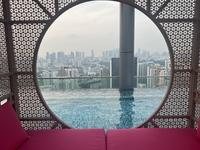 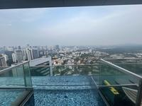One of the best parts of Singapore is the diverse and delicious food scene. Indian, Chinese, and Malaysian influences all combine to make Singapore's lovely food scene, with large outdoor hawker stands, fine restaurants, and massive indoor food courts.
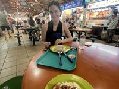 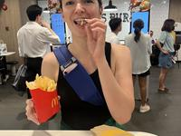 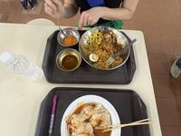 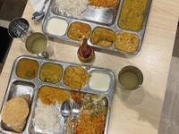I was happy to get a chance to visit the Google Singapore office and see an old colleague of mine!
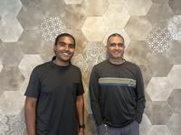 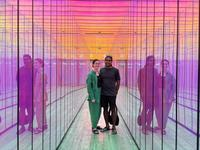We took advantage of the wonderful weather by taking lots of long walks, and enjoying the outdoor public gyms!
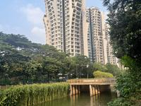 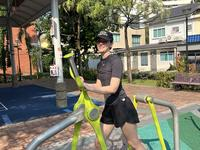Perforning some twists and turns at the gym
Pull-ups / lat-pull downs!
And after a slight change of itineraries, we are now headed to Hong Kong to meet with Kirsten's brother Marcus, and hopefully acquire visas to allow us to travel to the mainland of China!